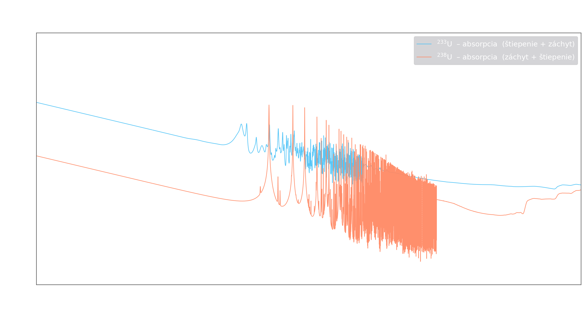
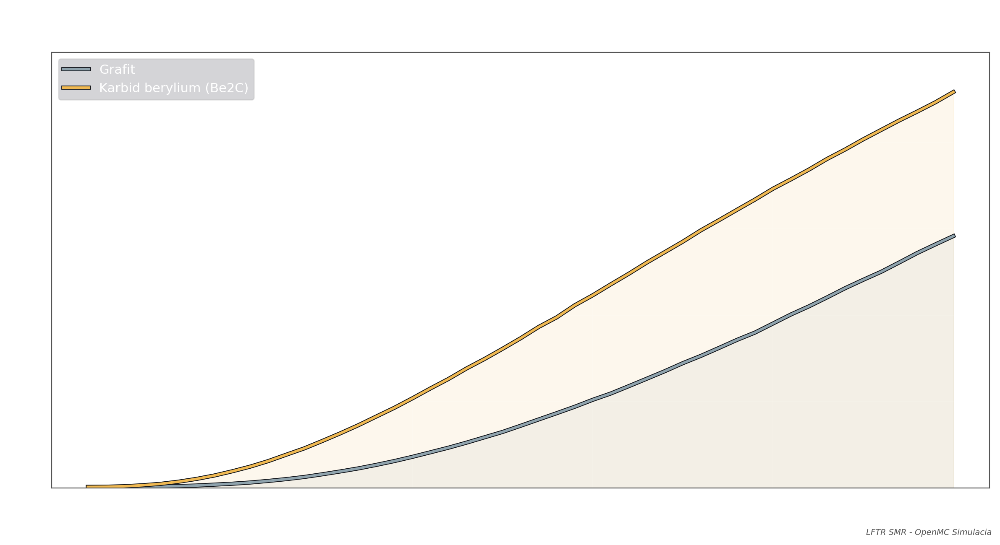
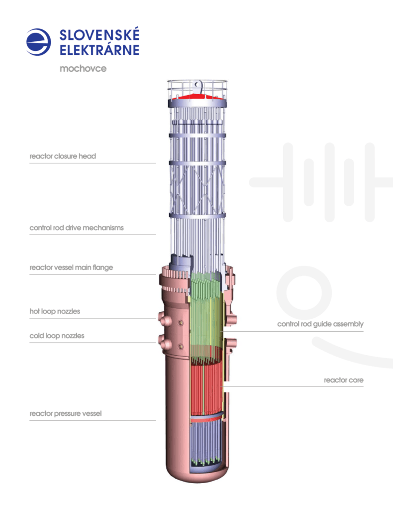
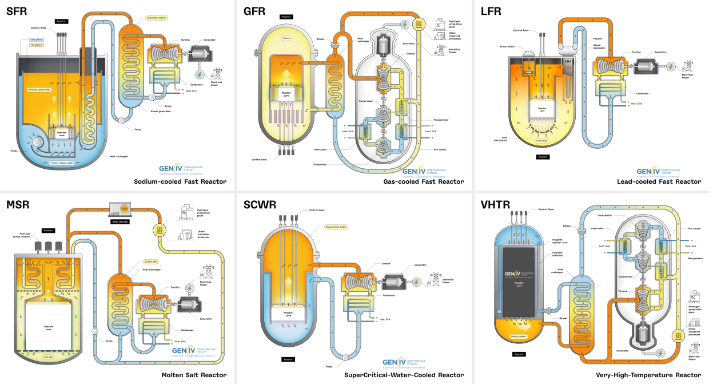
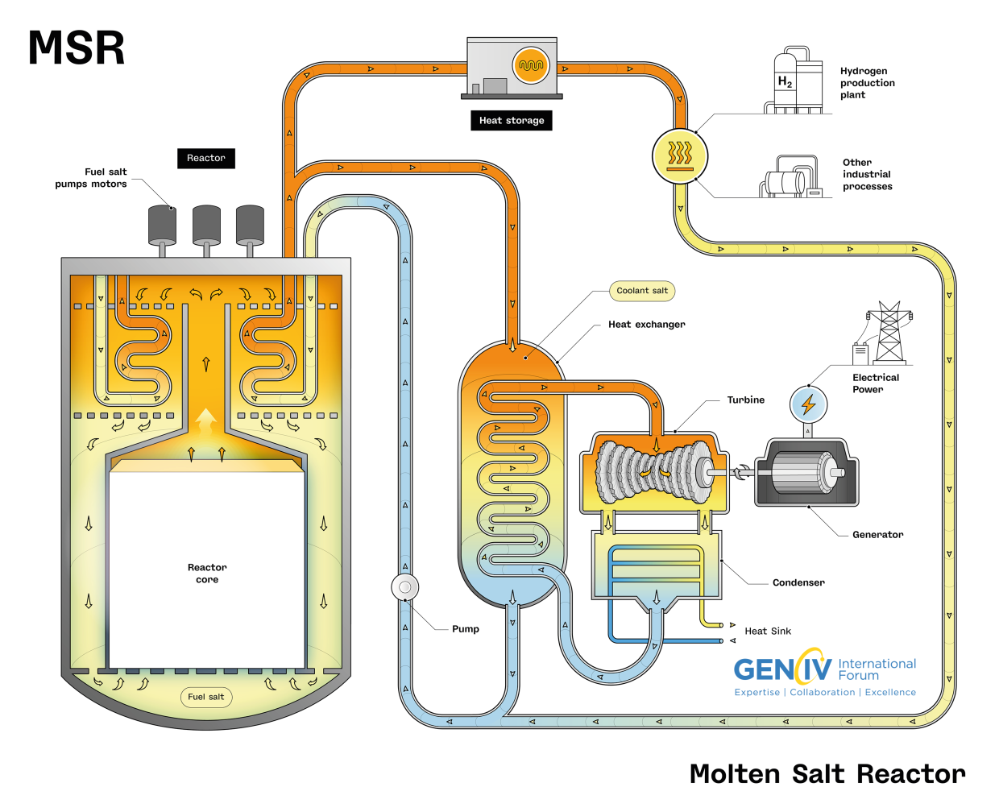
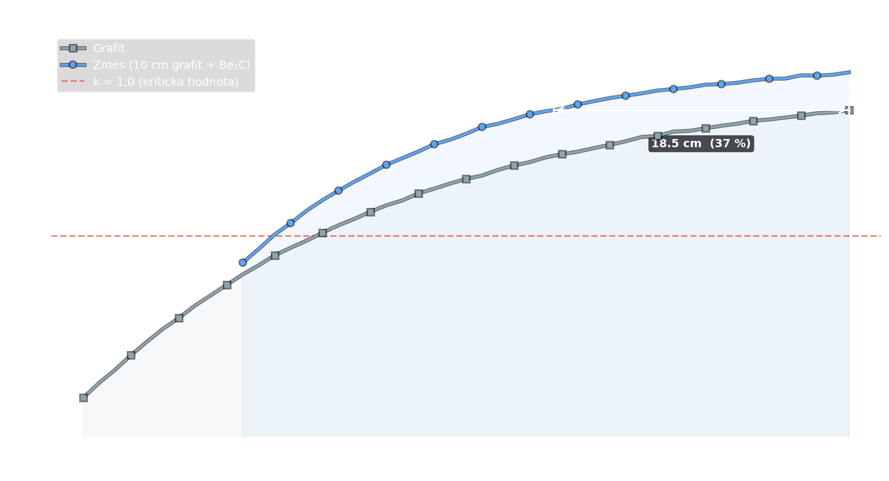
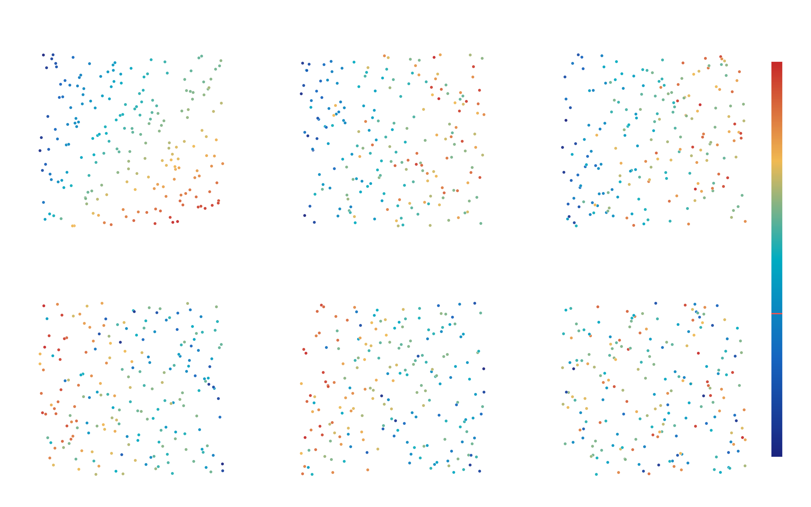

Stredoškolská odborná činnosť 2026
Erik M.
SPŠ Elektrotechnická Hálova 16, Bratislava
Sekcia 01
Neutrón uvoľnený pri štiepení 233U nesie priemernú energiu ~2 MeV — ide o rýchly neutrón. Reaktor ho musí spomaliť na tepelnú energiu (~0,025 eV).

Watt distribúcia, ENDF/B-VII.1 (Zdroj: vlastná produkcia)Porovnanie účinných prierezov absorpcie 233U a 238U. 233U je výrazne efektívnejší pri nízkych (tepelných) energiách — preto je výhodný v tepelnom reaktore.

Účinné prierezy absorpcie 233U a 238U — ENDF/B-VII.1 (Zdroj: vlastná produkcia)Čím ľahší je atóm moderátora, tým viac energie neutrón pri zrážke odovzdá.
Grafit (12C) je preto ideálny — ľahké jadro, nízka absorpcia, vysoká spomaľovacia schopnosť.
Moderačný pomer (φtepelný / φrýchly) vyjadruje schopnosť materiálu termalizovať neutróny. Čím vyšší pomer, tým efektívnejšia moderácia.
Be2C dosahuje výrazne vyšší moderačný pomer než grafit napriek rovnakej hrúbke vrstvy.

Moderačný pomer φt/φr — BeC vs. Grafit (Zdroj: vlastná produkcia)Sekcia 02

VVER-1200 — typický reaktor Gen III+
6 systémov vybratých Generation IV International Forum
Molten Salt Reactor (MSR) — reaktor s roztavenými soľamiRoztavené soli
Sekcia 03
Prierez reaktorom LFTR pri hrúbke grafitovej vrstvy 50 cm. Aktívna zóna (soľ FLiBe s palivom) má polomer 35 cm. Vonkajší polomer reaktora dosahuje 85 cm — priemer ~1,7 m.
Aby samotný Be₂C dosiahol rovnaký moderačný pomer ako 50 cm grafitu, potrebuje vrstvu hrúbky ≈ 35,5 cm. Celkový polomer reaktora: 72,5 cm — o 12,5 cm menší.
Soľ FLiBe (LiF·BeF₂) pri priamom kontakte s Be₂C extrahuje beryliové ióny, čím degraduje moderátor. Reaktor si preto vyžaduje ochrannú vrstvu.
Preto sa medzi soľ a Be₂C vkladá grafitová bariéra — chráni moderátor pred priamym kontaktom.
Rozpúšťanie Be₂C soľou FLiBe
Be₂C + 2 BeF₂ ⟶ 4 BeF + C
BeF₂ je súčasťou FLiBe soli — reaguje priamo s Be₂C
Fluoridový útok na Be₂C
Be₂C + 4 HF ⟶ 2 BeF₂ + CH₄↑
Stopa vlhkosti v soli produkuje HF, ktorý napáda Be₂C
Riešenie — grafitová bariéra
Grafit je odolný voči FLiBe — chráni Be₂C pred degradáciou
10 cm grafitu (ochranná bariéra) + ≈ 30,2 cm Be₂C dosiahne rovnaký moderačný pomer ako samotných 50 cm grafitu. Celkový polomer: 77,2 cm.
Sekcia 04
Geometria & Palivo
Monte Carlo nastavenia
Dizajn štúdií
Model reaktora LFTR
ENDF/B-VII.1 — náhľad dát
Sekcia 05
Zmiešaná vrstva 10 cm grafitu + Be₂C dosahuje rovnakú neutrónovú ekonomiku ako 50 cm čistého grafitu už pri celkovej hrúbke ~31,5 cm.
Presnosť výpočtu: σ(k-eff) < 0,0005 pri 800 000 aktívnych históriách na bod (štandartná odchýlka Monte Carlo).

Graf 1 — k-efektívne vs. celková hrúbka reflektora (Zdroj: vlastná produkcia)Rozsah každého parametra sa rozdelí na N rovnakých pásiem. Z každého pásma sa vyberie práve jeden bod — a to tak, aby každý pás bol pokrytý pre každý parameter presne raz. Výsledok: N bodov rovnomerne pokrývajúcich celý priestor bez redundancie.
Párové bodové grafy 200 LHS vzoriek. Farba bodu reprezentuje výslednú hodnotu k-efektívne — vidíme ktoré dvojice parametrov majú najsilnejší vplyv.

Párové bodové grafy — 200 LHS vzoriek, 5 parametrov (Zdroj: vlastná produkcia)Z 200 LHS simulácií sme zostrojili interpolačnú maticu, ktorá modeluje správanie reaktora v celom parametrickom priestore. Pre ľubovoľnú kombináciu vstupných parametrov dokáže predpovedať k-efektívne bez spustenia ďalšej simulácie.
Sekcia 06
Na získanie presnejších výsledkov by som potreboval silnejšiu výpočetnú kapacitu.
Vďaka záujmu dvoch profesorov na Fakulte Jadrové a Fyzikálne Inžinierské v Prahe v blízkom čase dostanem možnosť použiť ich výpočtový kluster na vypočítanie viacerých parametrov — rozpadových reťazí, transmutácií a dlhodobého deplécie paliva.
Fakulta jaderná a fyzikálně inženýrská, ČVUT Praha
Erik M. · SOČ 2026